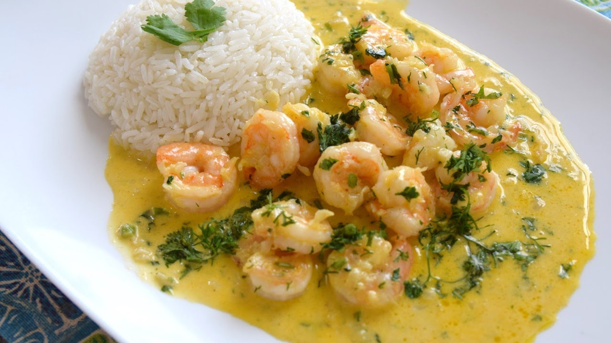

-

- 
-

Camarones al Ajillo
Calificación de los visitantes
Si estas en Santa Elena y buscas un buen platillo que degustar, los camarones al ajillo es una muy buena opción. El secreto en éste plato está en su sazón, sumergidos en mantequilla, sazonada con especias que generan un sabor refrescante y delicioso. Además puede ser combinado por cualquier otro acompañamiento y no bajará de categoría.